3 Sampling the Imaginary
3.1 Sampling from a grid-aproximate posterior
地球儀の例について、事後確率を算出する。
9回中6回地表にコインが落ちたときを考え、grid-approximationを行う。
set.seed(100)
n <- 1000
n_success <- 6
n_trials <- 9
(d <- tibble(p_grid = seq(0,1,length.out =n),
prior = 1) %>%
mutate(likelihood = dbinom(n_success,n_trials,prob=p_grid),
posterior = likelihood*prior/sum(likelihood*prior)))## # A tibble: 1,000 × 4
## p_grid prior likelihood posterior
## <dbl> <dbl> <dbl> <dbl>
## 1 0 1 0 0
## 2 0.00100 1 8.43e-17 8.43e-19
## 3 0.00200 1 5.38e-15 5.38e-17
## 4 0.00300 1 6.11e-14 6.11e-16
## 5 0.00400 1 3.42e-13 3.42e-15
## 6 0.00501 1 1.30e-12 1.30e-14
## 7 0.00601 1 3.87e-12 3.88e-14
## 8 0.00701 1 9.73e-12 9.74e-14
## 9 0.00801 1 2.16e-11 2.16e-13
## 10 0.00901 1 4.37e-11 4.38e-13
## # … with 990 more rowsd %>%
ggplot(aes(x=p_grid,y=posterior))+
geom_line(size=0.1)+
geom_point(size=0.1)+
theme(panel.grid = element_blank(),
text = element_text(size = 12))+
theme_bw()+
xlab("proportion of water (p)")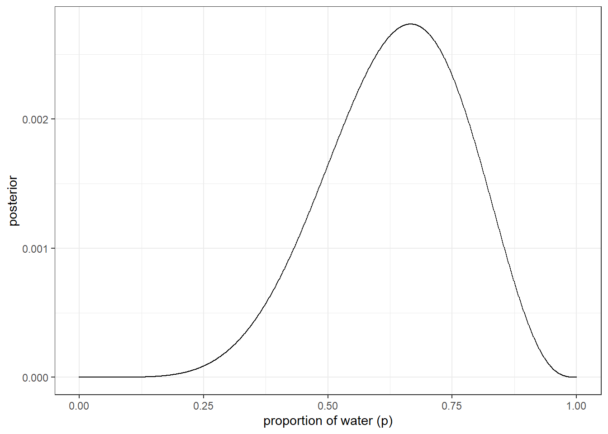
事後分布からサンプルを取得する。
確率密度で重みづけしたうえで、各確率（0<p<1）を事後分布から10000回サンプリングする。
n_samples <- 1e4
set.seed(100)
samples <-
d %>%
slice_sample(n=n_samples, weight_by = posterior, replace= TRUE) %>%
mutate(sample_number = 1:n())
glimpse(samples)## Rows: 10,000
## Columns: 5
## $ p_grid <dbl> 0.7137137, 0.3573574, 0.5985986, 0.7177177, 0.6296296, 0…
## $ prior <dbl> 1, 1, 1, 1, 1, 1, 1, 1, 1, 1, 1, 1, 1, 1, 1, 1, 1, 1, 1,…
## $ likelihood <dbl> 0.26051046, 0.04643060, 0.24993675, 0.25825703, 0.265888…
## $ posterior <dbl> 0.0026077123, 0.0004647707, 0.0025018693, 0.0025851554, …
## $ sample_number <int> 1, 2, 3, 4, 5, 6, 7, 8, 9, 10, 11, 12, 13, 14, 15, 16, 1…サンプルはp=0.6付近に集中していることが分かる。
# figure3.1
samples %>%
ggplot(aes(x = sample_number, y = p_grid))+
geom_point(alpha=0.1, color = "blue")+
scale_y_continuous("proportion of water (p)")+
theme_classic()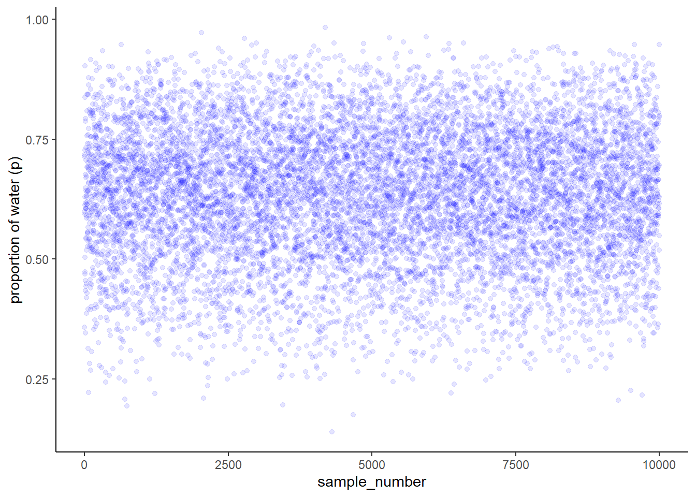
samples %>%
ggplot(aes(x=p_grid))+
geom_density(color="blue", size = 0.7)+
theme_classic()+
scale_y_continuous(breaks = seq(0,2.5,0.5))+
scale_x_continuous("proportion of water (p)",breaks = seq(0,1,0.2))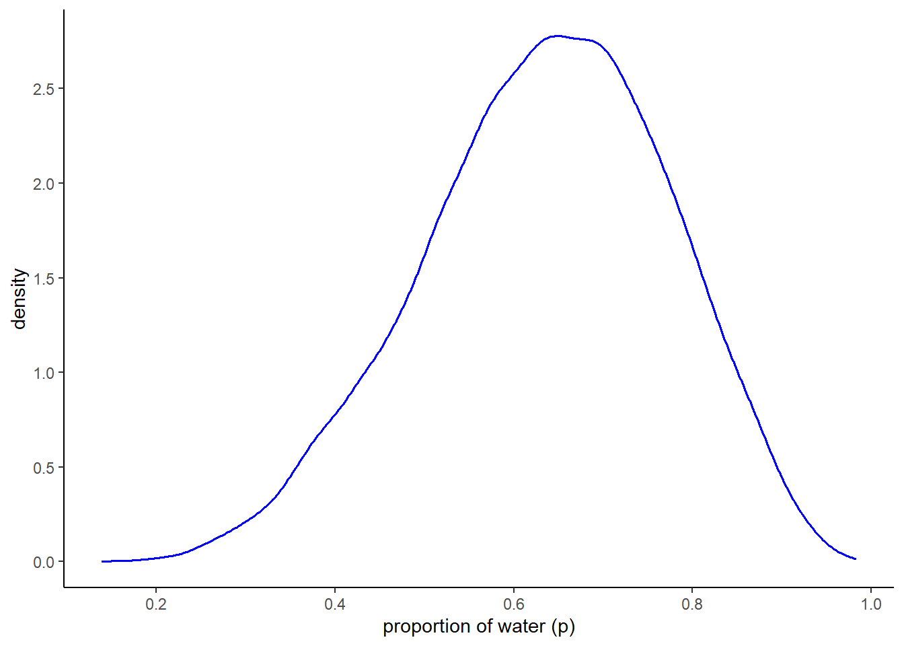
3.2 Sampling to summarize
事後分布からのサンプリングを用いることで、事後分布の区間推定や点推定を容易に行うことができる。
# grid approximationから
d %>%
filter(p_grid < .5) %>%
summarise(sum = sum(posterior))## # A tibble: 1 × 1
## sum
## <dbl>
## 1 0.172# サンプリングから
# 0.5未満の確率
samples %>%
filter(p_grid < 0.5) %>%
summarise(sum = n()/n_samples)## # A tibble: 1 × 1
## sum
## <dbl>
## 1 0.167# 0.5以上0.75未満の確率
samples %>%
filter(p_grid > .5 & p_grid < .75) %>%
summarise(sum = n()/n_samples)## # A tibble: 1 × 1
## sum
## <dbl>
## 1 0.621# Figure3.2
p1 <-
d %>%
ggplot(aes(x=p_grid, y=posterior))+
geom_line()+
geom_area(data= d %>% filter(p_grid < .5),
fill = "blue")+
labs(x="proportion of water (p)",
y= "Density")
p2 <- d %>%
ggplot(aes(x=p_grid, y=posterior))+
geom_line()+
geom_area(data= d %>% filter(p_grid >.5 & p_grid < .75), fill = "blue")+
labs(x="proportion of water (p)",
y= "Density")
library(patchwork)
p1+p2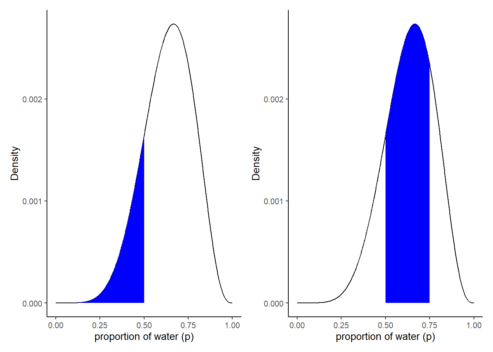
3.2.1 Intervals of defined mass
事後分布空のサンプルを用いて区間推定を行う。
# 60%信用区間
quantile(samples$p_grid, c(0.2,0.8))## 20% 80%
## 0.5185185 0.7557558# 60$信用区間の作図
q_80 <- quantile(samples$p_grid, prob = .8)
q_20 <- quantile(samples$p_grid, prob = .2)
d %>%
ggplot(aes(x=p_grid, y=posterior))+
geom_line()+
geom_area(data= d %>% filter(p_grid > q_20 & p_grid < q_80), fill = "blue")+
labs(x="proportion of water (p)",
y= "Density")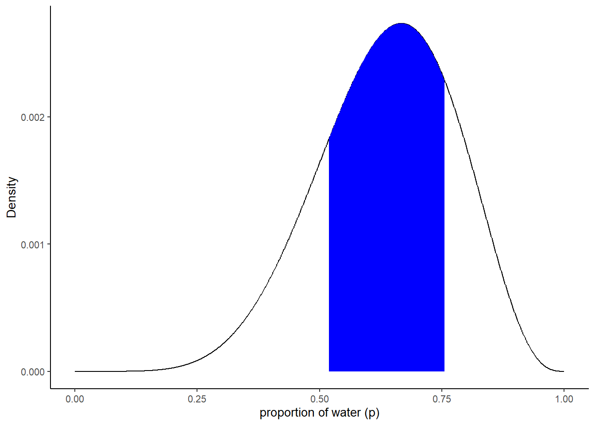
3.2.2 highly skewed example
分布が偏っているデータでは、単純に信用区間をとるとMAP推定値が含まれない。HPDIが信用区間の代わりに使われることがある。
ここでは、3回中3回地表にコインが落ちた場合を考える。
n <- 1000
n_trials <- 3
n_success <- 3
d2 <- tibble(p_grid = seq(0,1,length.out =n),
prior = 1) %>%
mutate(likelihood = dbinom(n_success,n_trials,prob=p_grid),
posterior = likelihood*prior/sum(likelihood*prior))
samples2 <-
d2 %>%
slice_sample(n=n_samples, weight_by = posterior,
replace = TRUE)50%信用区間は以下の通り。
最頻値（MAP推定値）が含まれない。
q2_25 <- quantile(samples2$p_grid, prob = .25)
q2_75 <- quantile(samples2$p_grid, prob = .75)
PI(samples2$p_grid, prob=0.5)## 25% 75%
## 0.7047047 0.9309309# Figure3.3
d2 %>%
ggplot(aes(x=p_grid, y=posterior))+
geom_line()+
geom_area(data= d2 %>% filter(p_grid > q2_25 & p_grid < q2_75), fill = "blue")+
labs(x="proportion of water (p)",
y= "Density")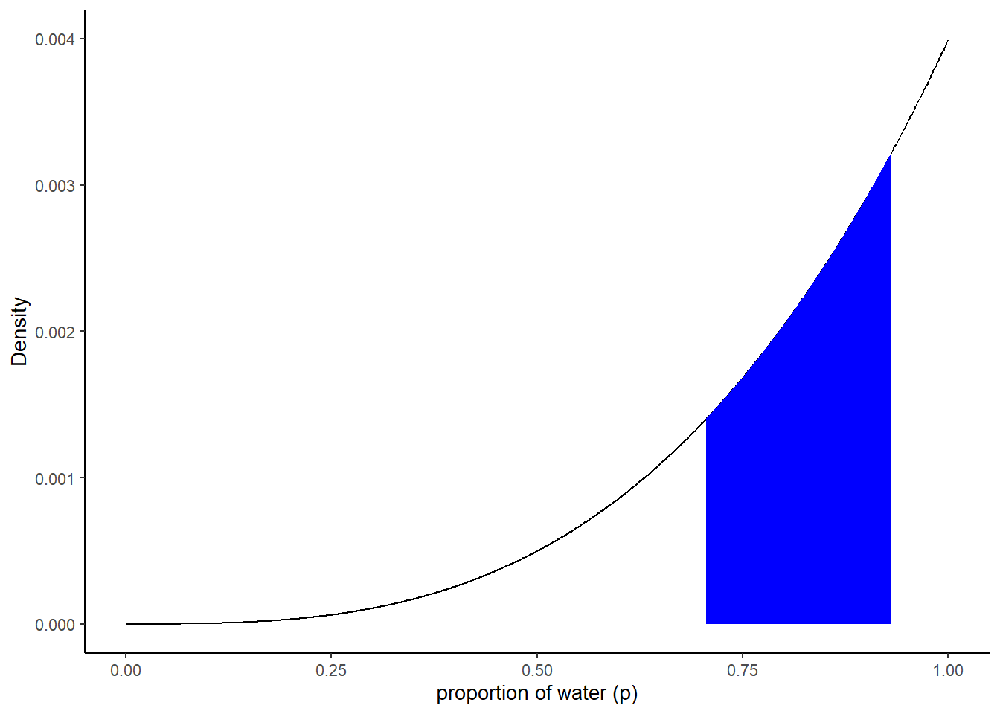
50%最高密度区間（HPDI）を求める。
ある確率になる範囲の内、最も区間が狭くなるものをHPDIという。
hdpi50 <- HPDI(samples2$p_grid, prob = c(0.5))
d2 %>%
ggplot(aes(x=p_grid, y=posterior))+
geom_line()+
geom_area(data= d2 %>% filter(p_grid > hdpi50[[1]] & p_grid < hdpi50[[2]]), fill = "blue")+
labs(x="proportion of water (p)",
y= "Density")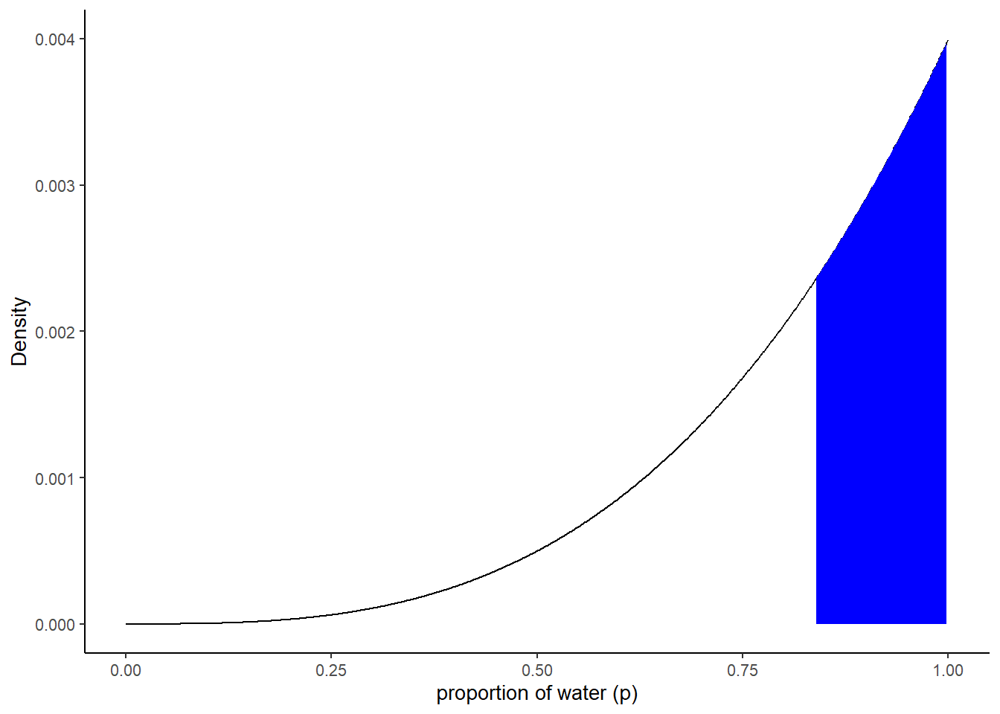
tidybayesを用いて区間推定ができる。
# using tidybayes
library(tidybayes)
median_qi(samples2$p_grid, .width = c(.5, .8, .99))## y ymin ymax .width .point .interval
## 1 0.8398398 0.7047047 0.9309309 0.50 median qi
## 2 0.8398398 0.5554555 0.9749750 0.80 median qi
## 3 0.8398398 0.2522372 0.9989990 0.99 median qimode_hdi(samples2$p_grid, .width=.5)## y ymin ymax .width .point .interval
## 1 0.9554858 0.8388388 0.998999 0.5 mode hdiHPDI(samples2$p_grid, prob=.5)## |0.5 0.5|
## 0.8388388 0.9989990hdi(samples2$p_grid, .width=.5)## [,1] [,2]
## [1,] 0.8388388 0.998999# comparing HDPI with QI
bind_rows(mean_hdi(samples$p_grid, .width = c(.8,.95)),
mean_qi(samples$p_grid, .width = c(.8,.95))) %>%
select(.width, .interval, ymin:ymax) %>%
arrange(.width) %>%
mutate_if(is.double, round, digits = 2)## .width .interval ymin ymax
## 1 0.80 hdi 0.46 0.82
## 2 0.80 qi 0.45 0.81
## 3 0.95 hdi 0.37 0.89
## 4 0.95 qi 0.35 0.883.2.3 Point estimate
代表値としては、mean, median, modeなどがとれる。
分布がゆがむとこれらの値は大きく違ってくる。
# binomial(3,3)の例
samples2 %>%
summarise(mean=mean(p_grid),
median = median(p_grid),
mode = Mode(p_grid))## # A tibble: 1 × 3
## mean median mode
## <dbl> <dbl> <dbl>
## 1 0.798 0.840 0.955point_estimates <-
bind_rows(samples2 %>% mean_qi(p_grid),
samples2 %>% median_qi(p_grid),
samples2 %>% mode_qi(p_grid))%>%
select(p_grid, .point) %>%
mutate(x = p_grid + c(-.03, .03, -.03),
y = c(.0005, .0012, .002))
d2 %>%
ggplot(aes(x = p_grid)) +
geom_area(aes(y = posterior),
fill = "grey75") +
geom_vline(xintercept = point_estimates$p_grid) +
geom_text(data = point_estimates,
aes(x = x, y = y, label = .point),
angle = 90)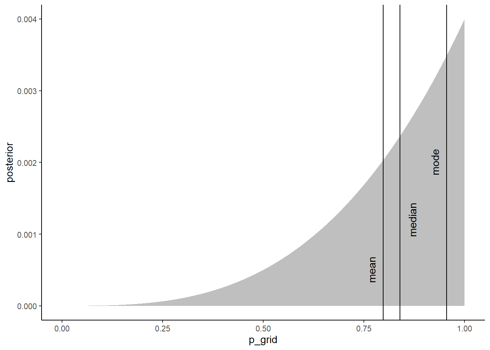
代表値を求める手法として、損失関数を最も小さくするような値を考えるとよい。
損失関数を最小にする代表値を選ぶとき、偏差平方和を最小にするのは平均値で、絶対偏差和を最小にするのが中央値である。
# 絶対偏差和の合計
make_loss <- function(our_d) {
d2 %>%
mutate(loss = posterior * abs(our_d - p_grid)) %>%
summarise(weighted_average_loss = sum(loss))
}
l <-
d2 %>%
select(p_grid) %>%
rename(decision = p_grid) %>%
mutate(weighted_average_loss = purrr::map(decision, make_loss)) %>%
unnest(weighted_average_loss)
min_loss <-
l %>%
filter(weighted_average_loss == min(weighted_average_loss)) %>%
as.numeric()
l %>%
ggplot(aes(x = decision, y = weighted_average_loss)) +
geom_area(fill = "grey75") +
geom_vline(xintercept = min_loss[1], color = "white", linetype = 3) +
geom_hline(yintercept = min_loss[2], color = "white", linetype = 3) +
ylab("expected proportional loss") +
theme(panel.grid = element_blank())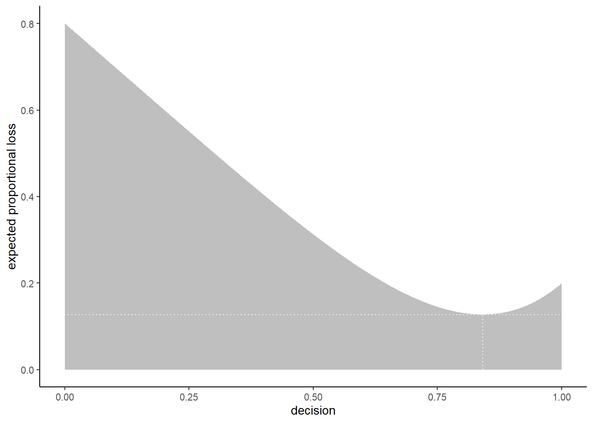
3.3 Sampling to simulate prediction
事後分布からのサンプリングを用いてシミュレーションを行う。
まずは、rbinomの使い方をマスターする。
dummy <- rbinom(1e5,size =2,prob=0.7)
tibble(n_W = dummy) %>%
group_by(n_W) %>%
count() %>%
mutate(prop = n/1e5)## # A tibble: 3 × 3
## # Groups: n_W [3]
## n_W n prop
## <int> <int> <dbl>
## 1 0 9006 0.0901
## 2 1 41696 0.417
## 3 2 49298 0.493# size = 9
dummy <- rbinom(1e5, size =9, prob = 0.7)
d_3 <- tibble(draws = dummy)
d_3 %>%
ggplot(aes(x=draws))+
geom_histogram(binwidth =0.2, center = 0,
color = "grey92", size = 1/10)+
scale_y_continuous("frequency",
breaks = seq(0,25000,5000))+
scale_x_continuous("dummy water count",
breaks = seq(0,9,2))+
theme(text=element_text(size=15))+
coord_cartesian(xlim=c(0,9))+
theme_classic()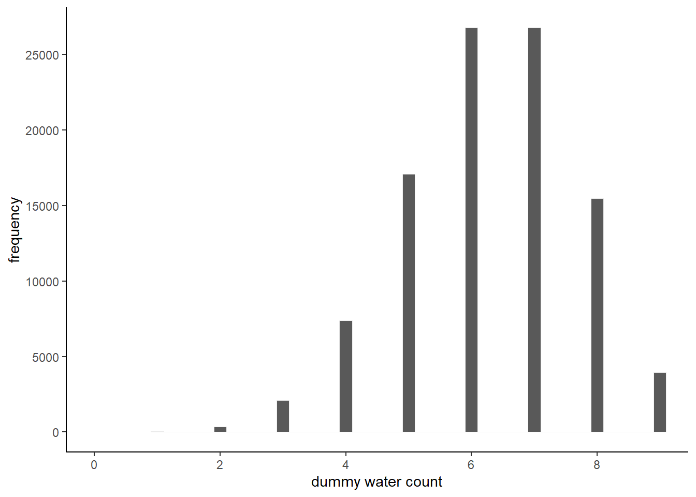
# 色々試してみる
n_draws <- 1e5
simulate_binom <- function(n, probability){
set.seed(3)
rbinom(n_draws, size =n, prob = probability)
}
d_4 <-
crossing(n = c(3,6,9),
probability = c(.3,.6,.9)) %>%
mutate(draws = map2(n, probability, simulate_binom)) %>%
ungroup() %>%
mutate(n= str_c("n = ", n),
probability = str_c("p = ", probability)) %>%
unnest(draws)
d_4 %>%
ggplot(aes(x=draws))+
geom_histogram(binwidth = 1, color="grey92",
size = 1/10, center =0)+
scale_x_continuous("dummy water count",
breaks = seq(from = 0, to = 9, by = 1))+
ylab("frequency")+
theme(panel.grid = element_blank())+
facet_grid(n~probability)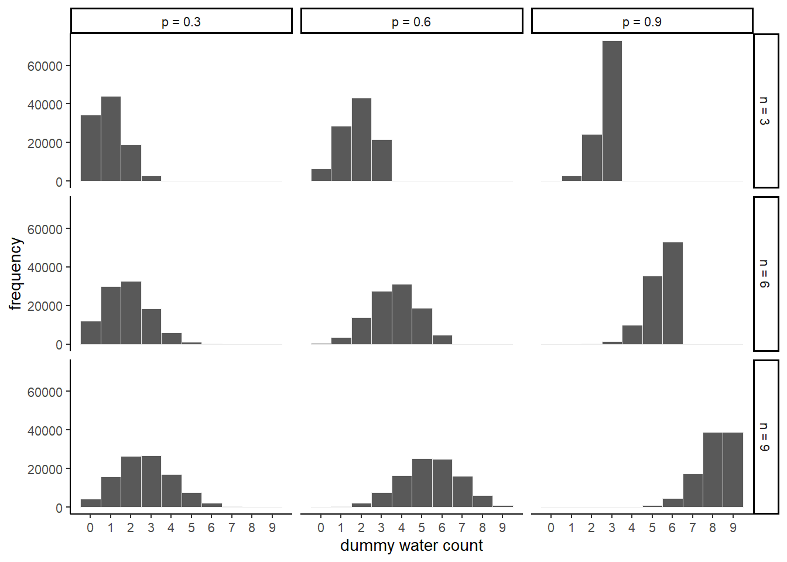
3.3.1 Model checking
試行間の相関などがシミュレーションと比較して大きくないかなどを見ることで、モデルチェックを行うことができる。
set.seed(123)
samples <-
d %>%
slice_sample(n=n_samples, weight_by = posterior,
replace=TRUE) %>%
mutate(W = map_dbl(p_grid, rbinom, n =1, size=9))
samples %>%
ggplot(aes(x=W))+
geom_histogram(binwidth =0.2, size=1/10,
color = "grey92",center=0)+
scale_x_continuous("number of water samples",
breaks = seq(0,9,3))+
theme(text = element_text(size=18))+
scale_y_continuous(NULL, breaks=NULL)+
theme_bw()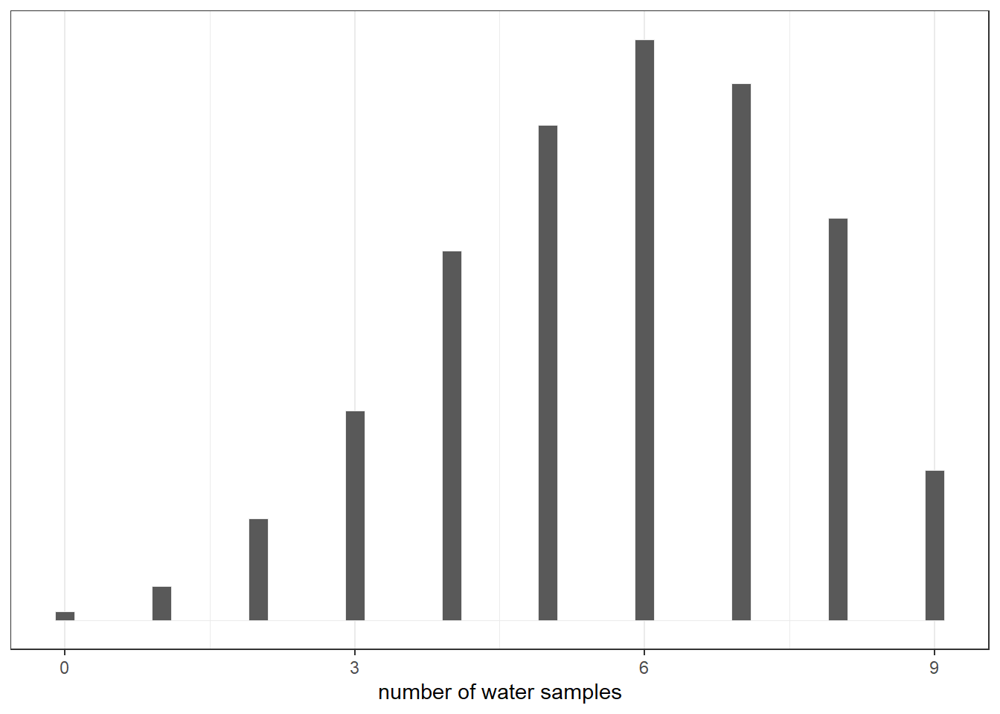
## 試行間の相関を確認
set.seed(123)
samples_2 <-
samples %>%
mutate(iter = 1:n(),
draws = purrr::map(p_grid, rbinom,n=9,size=1)) %>%
unnest(draws)
## 連続回数
samples_2 %>%
group_by(iter) %>%
summarise(longest = rle(draws)$length %>% max()) %>%
ggplot(aes(x=longest))+
geom_histogram(aes(fill = longest ==3),
binwidth = 0.2, center=0,
color="grey92")+
theme_bw()+
theme(legend.position = "none",)+
scale_y_continuous(NULL, breaks = NULL)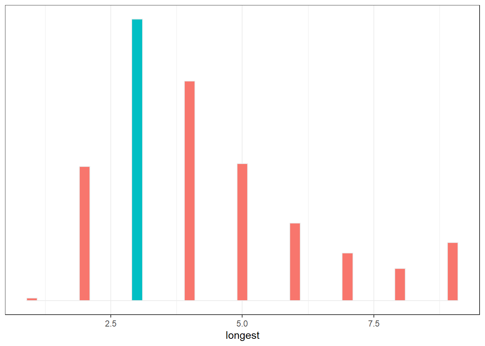
samples_2 %>%
group_by(iter) %>%
summarise(longest = rle(draws)$lengths %>% length()) %>%
ggplot(aes(x=longest))+
geom_histogram(aes(fill = longest ==7),
binwidth = 0.2, center=0,
color="grey92")+
theme_bw()+
theme(legend.position = "none",)+
scale_y_continuous(NULL, breaks = NULL)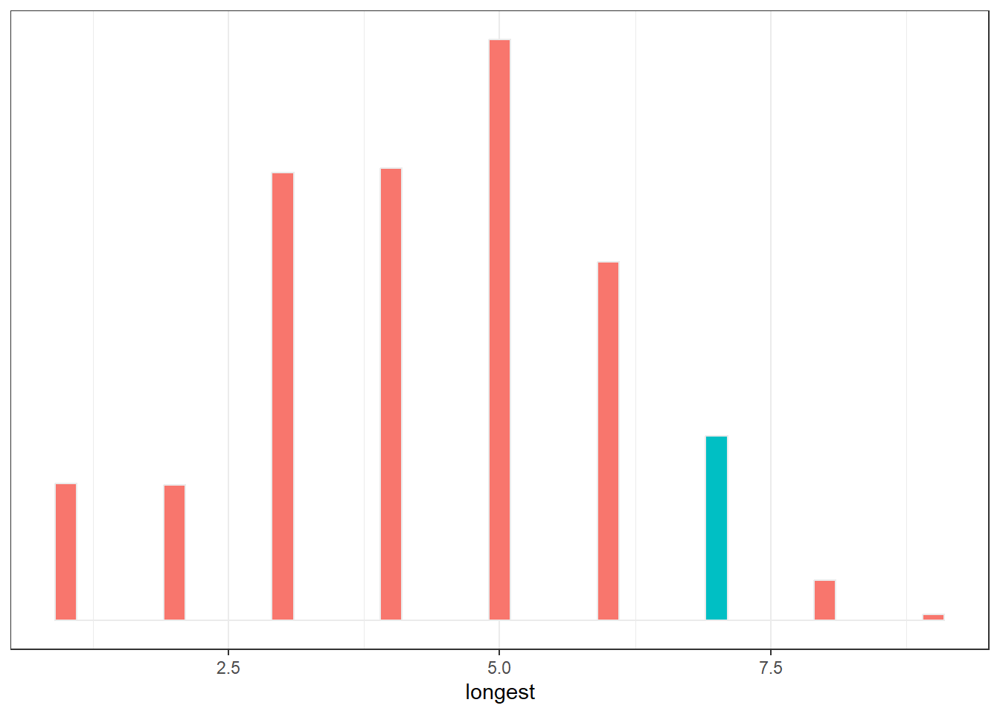
3.3.2 Practice with brms
b3.1 <-
brm(data=list(W=6),
family = binomial(link="identity"),
formula = W|trials(9) ~ 0+Intercept,
prior("", class=b, lb = 0, ub=1),
iter = 5000, warmup=1000,
chains = 4,
backend = "cmdstanr",
file = "output/Chapter3/b3.1",
seed = 123)
print(b3.1)## Family: binomial
## Links: mu = identity
## Formula: W | trials(9) ~ 0 + Intercept
## Data: list(W = 6) (Number of observations: 1)
## Draws: 4 chains, each with iter = 5000; warmup = 1000; thin = 1;
## total post-warmup draws = 16000
##
## Population-Level Effects:
## Estimate Est.Error l-95% CI u-95% CI Rhat Bulk_ESS Tail_ESS
## Intercept 0.64 0.14 0.34 0.88 1.00 6091 6584
##
## Draws were sampled using sample(hmc). For each parameter, Bulk_ESS
## and Tail_ESS are effective sample size measures, and Rhat is the potential
## scale reduction factor on split chains (at convergence, Rhat = 1).p <- posterior_samples(b3.1) %>%
as_tibble()
p %>%
ggplot(aes(x=b_Intercept))+
geom_density()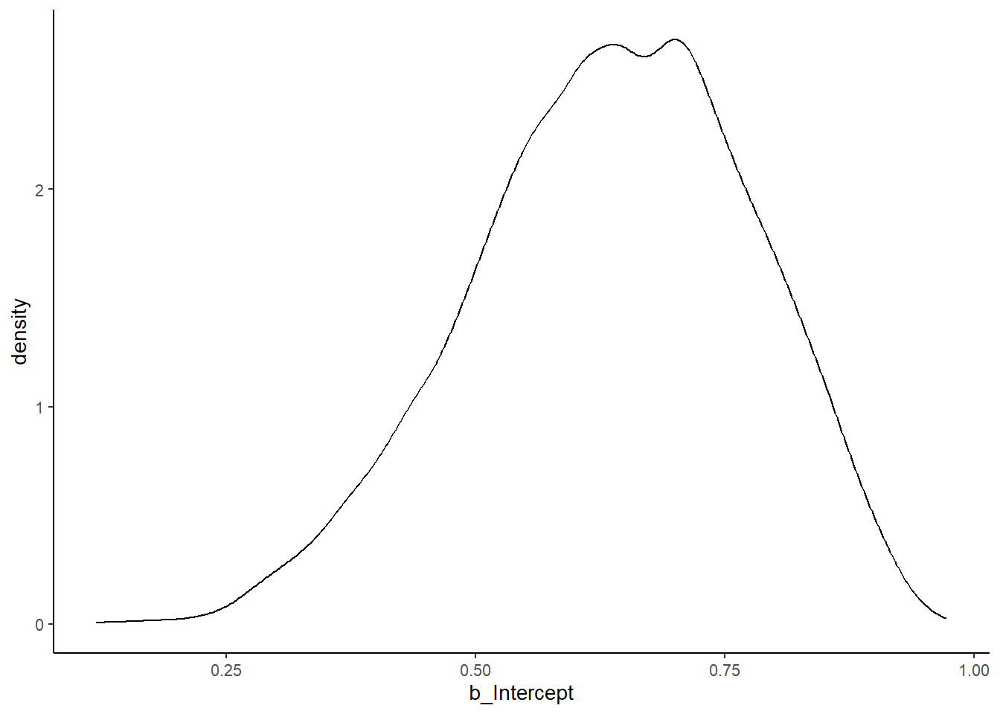
p <-
p %>%
mutate(W = rbinom(n(),size=n_trials, prob=b_Intercept))
p %>%
ggplot(aes(x=W))+
geom_histogram(binwidth=0.2)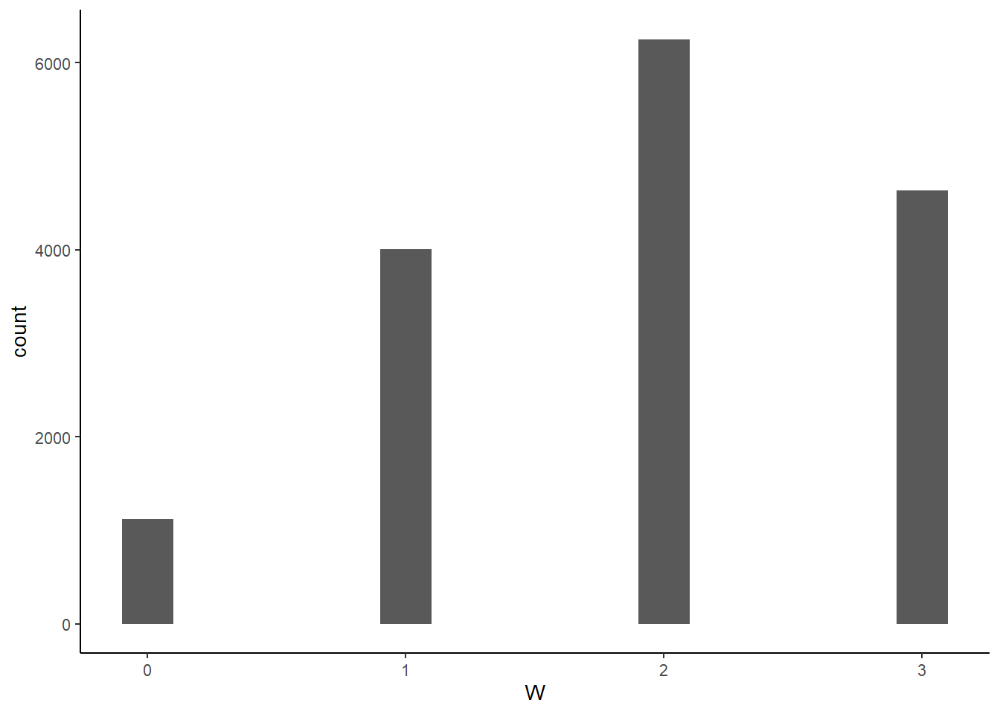
3.4 Practice
3.4.1 3E
he Easy problems use the sample from the posterior distribution for the globe tossing example. The code will give you a specific set of samples, so that you can check your answers exactly.
p_grid <- seq(from = 0, to = 1, length.out = 1000)
prior <- rep(1, 1000)
likelihood <- dbinom(6, size = 9, prob = p_grid)
posterior <- likelihood * prior
posterior <- posterior / sum(posterior)
set.seed(100)
samples <- sample(p_grid, prob = posterior, size = 1e4, replace = TRUE)Use the values in samples to answer the questions that follow.
# 1
mean(samples < 0.2)## [1] 4e-04# 2
mean(samples > 0.8)## [1] 0.1116# 3
mean(between(samples,0.2,0.8))## [1] 0.888# 4
quantile(samples,prob=0.2)## 20%
## 0.5185185# 5
quantile(samples,prob=0.8)## 80%
## 0.7557558# 6
hdi(samples, 0.66)## [,1] [,2]
## [1,] 0.5085085 0.7737738# 7
qi(samples, 0.66)## [,1] [,2]
## [1,] 0.5025025 0.76976983.4.2 3M
3.4.2.1 3M1
Suppose the globe tossing data had turned out to be 8 water in 15 tosses. Constructe the posterior distribution, using grid approximation. Use the same flat prior as before.
n <- 1000
n_trials <- 15
n_success <- 8
e <- tibble(p_grid = seq(0,1,length.out=n),
prior = 1/1000) %>%
mutate(likelihood = dbinom(n_success,
n_trials,
prob = p_grid),
posterior = prior*likelihood,
posterior = posterior/sum(posterior))
e %>%
ggplot(aes(x=p_grid,y=posterior))+
geom_line()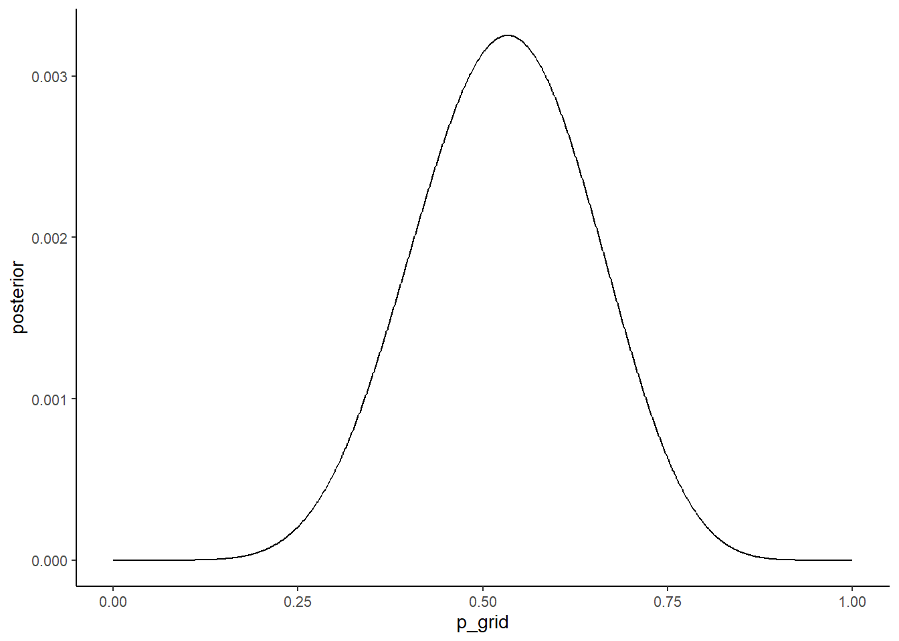
3.4.2.2 3M2
Draw 10,000 samples from the grid approximation from above. Then use the sample to calculate the 90% HPDI for p.
set.seed(123)
e_samples <-
e %>%
slice_sample(n=1e4, weight_by= posterior,
replace=TRUE) %>%
mutate(sample_number = 1:n())
hdi(e_samples$p_grid, .width=0.9)## [,1] [,2]
## [1,] 0.3343343 0.72172173.4.2.3 3M3
Construct a posterior predictive check for this model and data. The means simulate the distribution of samples, averaging over the posterior uncertainty in p. What is the probability of observing 8 water in 15 tosses?
set.seed(101)
e_samples <-
e_samples %>%
mutate(W = map_dbl(p_grid, rbinom, n=1,size=15))
mean(e_samples$W == 8)## [1] 0.14693.4.2.4 3M4
Using the posterior distribution constructed from the new (8/15) data, now calculate the probability of observing 6 water in 9 tosses.
e_samples <-
e_samples %>%
mutate(W2 = map_dbl(p_grid, rbinom, n=1, size=9))
mean(e_samples$W2 == 6)## [1] 0.1813.4.2.5 3M5
Start over at 3M1, but now use a prior that is zero below p = 0.5 and a constant above p = 0.5. This corresponds to prior information that a majority of the Earth’s surface is water. Repeat each problem above and compare the inferences (using both priors) to the true value p = 0.7.
e2 <- tibble(p_grid = seq(0,1,length.out=n),
prior = case_when(p_grid <0.5 ~ 0L,
TRUE ~ 1L)) %>%
mutate(likelihood = dbinom(n_success,
n_trials,
prob = p_grid),
posterior = prior*likelihood,
posterior = posterior/sum(posterior))
e_samples2 <-
e2 %>%
slice_sample(n=1e4, weight_by= posterior,
replace=TRUE) %>%
mutate(sample_number = 1:n())
# 事後分布
e2 %>%
ggplot(aes(x=p_grid, y=posterior))+
geom_line(size=1.5)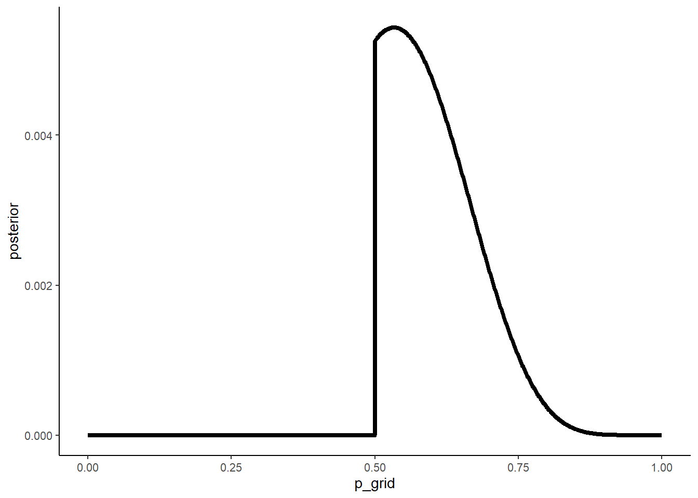
# 90$HPDI
hdi(e_samples2$p_grid, .width=0.9)## [,1] [,2]
## [1,] 0.5005005 0.7137137# サンプリング
e_samples2 <-
e_samples2 %>%
mutate(W = map_dbl(p_grid, rbinom, n=1, size=9))
mean(e_samples2$W==6)## [1] 0.2411e_samples2 %>%
ggplot(aes(x=W))+
geom_histogram(binwidth=0.5,size=1/10)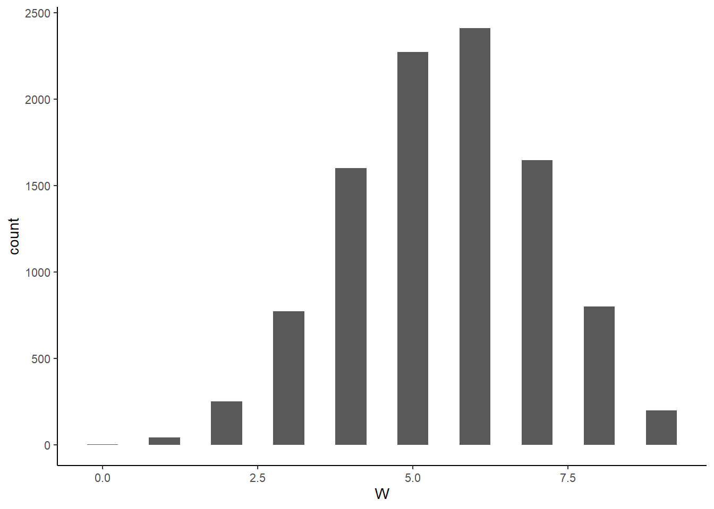
3.4.2.6 3M6
Suppose you want to estimate the Earth’s proportion of water very precisely. Specifically, you want the 99% percentile interval of the posterior distribution of p to be only 0.05 wide. This means the distance between the upper and lower bound of the interval should be 0.05. How many times will you have to toss the globe to do this?
single_sim <- function(tosses, prior_type = c("uniform", "step")) {
prior_type <- match.arg(prior_type)
n_success <- rbinom(1, size = tosses, prob = 0.7)
e3 <- tibble(p_grid =seq(from = 0, to = 1,
length.out = 1000)) %>%
mutate(likelihood = dbinom(n_success,
size=tosses,
prob = p_grid))
if(prior_type == "uniform"){
e3 <- mutate(e3, prior =rep(1,1000))
} else if(prior_type == "step"){
e3 <- mutate(e3, prior =case_when(p_grid >.5 ~1L,
TRUE ~0L))
} else {
print("error")
}
e3 <-
e3 %>%
mutate(posterior = prior*likelihood,
posterior = posterior/sum(posterior))
samples3 <- slice_sample(e3,n=1e4,
weight_by= posterior,
replace=TRUE)
interval <- PI(samples3$p_grid, prob = 0.99)
width <- interval[2] - interval[1]
}
single_cond <- function(tosses, prior_type, reps = 100) {
tibble(tosses = tosses,
prior_type = prior_type,
width = map_dbl(seq_len(reps),
~single_sim(tosses = tosses,
prior_type =
prior_type)))
}
simulation <- crossing(tosses = seq(1500, 3000,
by = 100),
prior_type = c("uniform",
"step")) %>%
pmap_dfr(single_cond, reps = 100) %>%
group_by(tosses, prior_type) %>%
summarise(avg = mean(width), .groups = "drop")
ggplot(simulation, aes(x=tosses,y=avg))+
geom_point()+
geom_line()+
facet_wrap(~prior_type)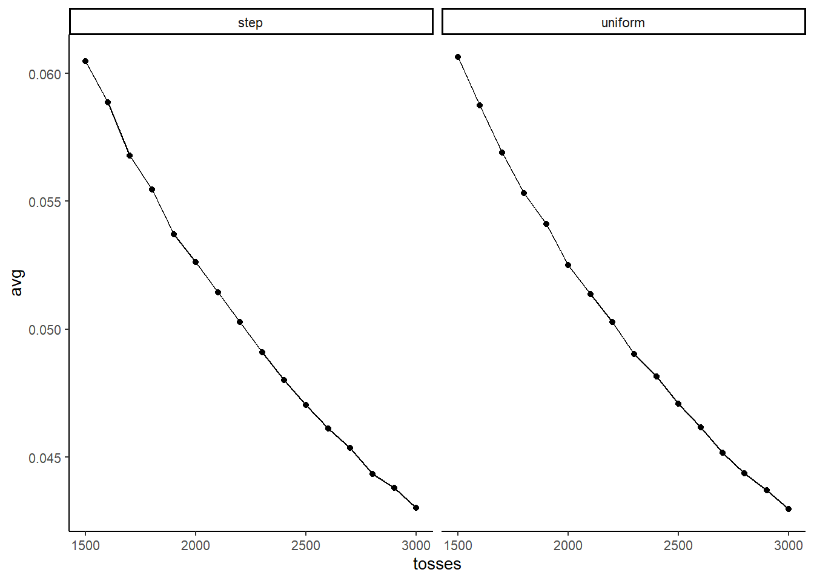
3.4.3 3H
The Hard problems here all use the data below. These data indicate the gender (male = 1, female = 0) of officially reported first and second born children in 100 two-child families. So for example, the first family in the data reported a boy (1) and then a girl (0). The second family reported a girl (0) and then a boy (1). The third family reported two girls. You can load these tow vectors into R’s memory by typing:
data(homeworkch3)
birth1## [1] 1 0 0 0 1 1 0 1 0 1 0 0 1 1 0 1 1 0 0 0 1 0 0 0 1 0 0 0 0 1 1 1 0 1 0 1 1
## [38] 1 0 1 0 1 1 0 1 0 0 1 1 0 1 0 0 0 0 0 0 0 1 1 0 1 0 0 1 0 0 0 1 0 0 1 1 1
## [75] 1 0 1 0 1 1 1 1 1 0 0 1 0 1 1 0 1 0 1 1 1 0 1 1 1 1birth2## [1] 0 1 0 1 0 1 1 1 0 0 1 1 1 1 1 0 0 1 1 1 0 0 1 1 1 0 1 1 1 0 1 1 1 0 1 0 0
## [38] 1 1 1 1 0 0 1 0 1 1 1 1 1 1 1 1 1 1 1 1 1 1 1 1 0 1 1 0 1 1 0 1 1 1 0 0 0
## [75] 0 0 0 1 0 0 0 1 1 0 0 1 0 0 1 1 0 0 0 1 1 1 0 0 0 0Use these vectors as data. So for example to compute the total number of boys born across all of these births, you could use:
sum(birth1) + sum(birth2)## [1] 1113.4.3.1 3H1
Using grid approximation, compute the posterior distribution for the probability of a birth being a boy. Assume a uniform prior probability. Which parameter value maximizes the posterior probability?
data("homeworkch3")
n_boy <- sum(birth1)+sum(birth2)
n_birth <- length(birth1)+length(birth2)
set.seed(100)
n <- 1000
baby <- tibble(p_grid = seq(0,1,length.out =n),
prior = 1) %>%
mutate(likelihood = dbinom(n_boy,n_birth,
prob=p_grid),
posterior = likelihood*prior/sum(likelihood*prior))
baby$p_grid[which.max(baby$posterior)]## [1] 0.55455463.4.3.2 3H2
Using the sample function, draw 10,000 random parameter values from the posterior distribution you calculated above. Use these sample to estimate the 50%, 89%, and 97% highest posterior density intervals.
b_samples <- slice_sample(baby, n=1e4, weight_by = posterior, replace=TRUE)
library(tidybayes)
HPDI(b_samples$p_grid,prob = c(0.5,0.89,0.97))## |0.97 |0.89 |0.5 0.5| 0.89| 0.97|
## 0.4824825 0.4994995 0.5265265 0.5725726 0.6076076 0.62962963.4.3.3 3H3
Use rbinom to simulate 10,000 replicates of 200 births. You should end up with 10,000 numbers, each one a count of boys out of 200 births. Compare the distribution of predicted numbers of boys to the actual count in the data (111 boys out of 200 births). There are many good ways to visualize the simulations, but the dens command (part of the rethinking package) is prbably the easiest way in this case. Does it look like the model fits the data well? That is, does the distribution of predictions include the actual observation as a central, likely outcome?
b_samples %>%
mutate(boys = rbinom(1e4,200,prob=p_grid)) -> b_samples
b_samples %>%
ggplot(aes(x=boys))+
stat_histinterval(color ="black",
.width = c(0.66, 0.89),
breaks = 100)+
geom_vline(aes(xintercept = n_boy), linetype = "dashed", color = "red")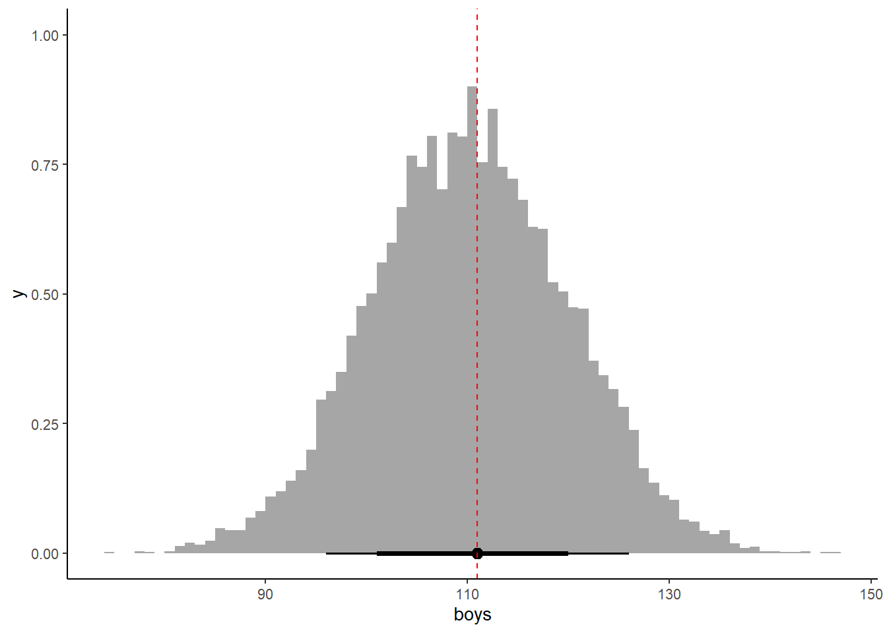
3.4.3.4 3H4
Now compare 10,000 counts of boys from 100 simulated first borns only the number of boys in the first births, birth1. How does the model look in this light?
b_samples %>%
mutate(boys = rbinom(1e4,100,prob=p_grid)) -> b_samples2
b_samples2 %>%
ggplot(aes(x=boys))+
stat_histinterval(color ="black",
.width = c(0.66, 0.89),
breaks = 50)+
geom_vline(aes(xintercept = sum(birth1)), linetype = "dashed", color = "red")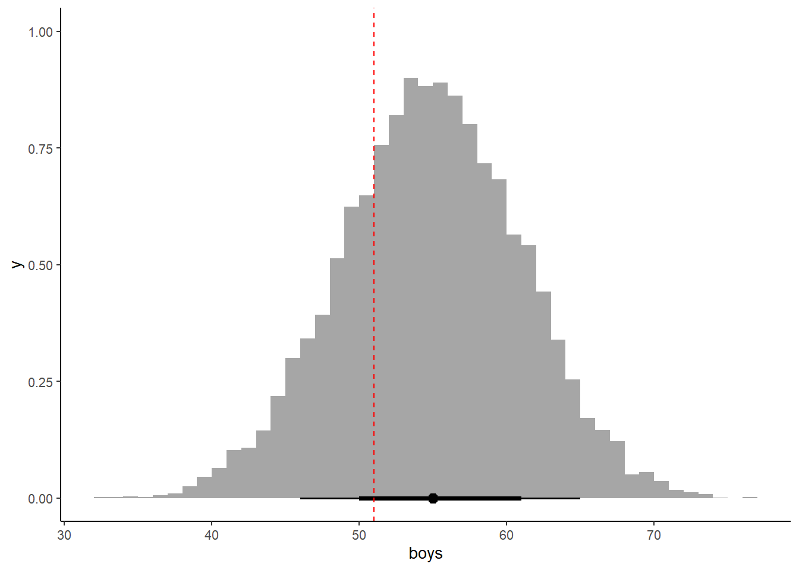
3.4.3.5 3H5
The model assumes that sex of first and second births are independent. To check this assumption, focus now on second births that followed female first borns. Compare 10,000 simulated conts of boys to only those second births that followed girls. To do this correctly, you need to count the number of first borns who were girls and simulate that many births, 10,000 times. Compare the counts of boys in your simulations to the actual observed count of boys following girls. How does the model look in this light? Any guesses what is going on in these data?
birth <- as_tibble(cbind(birth1,birth2))
birth %>%
filter(birth1 == "0") ->birth
set.seed(100)
n <- 1000
n_boy2 <- sum(birth)
n_birth2 <- nrow(birth)
b_samples3 <- b_samples %>%
mutate(boys = rbinom(1e4, size=49,prob=p_grid))
b_samples3 %>%
ggplot(aes(x=boys))+
stat_histinterval(color ="black",
.width = c(0.66, 0.89),
breaks = 50)+
geom_vline(aes(xintercept = sum(birth)), linetype = "dashed", color = "red")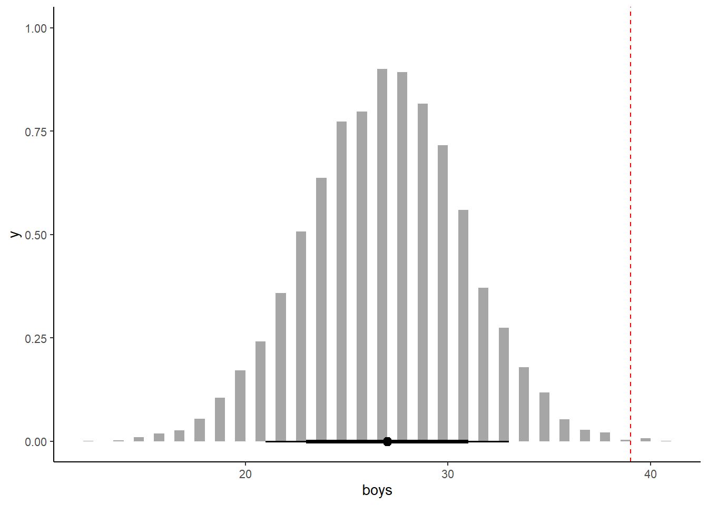
女の子が生まれた後には、男の子が生まれやすい。